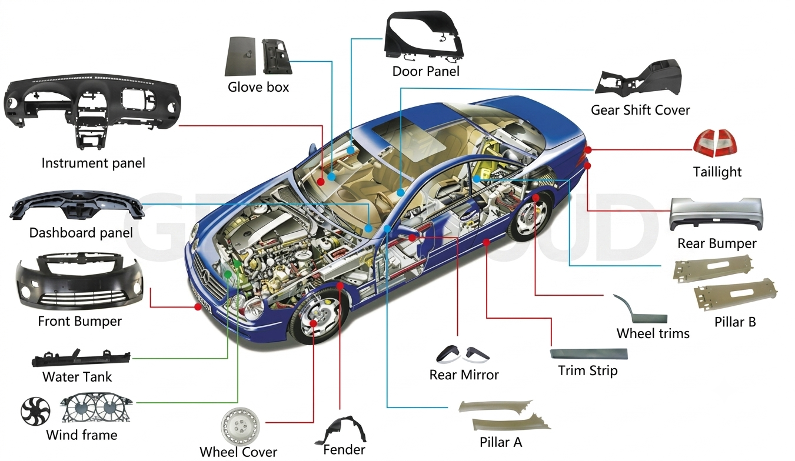
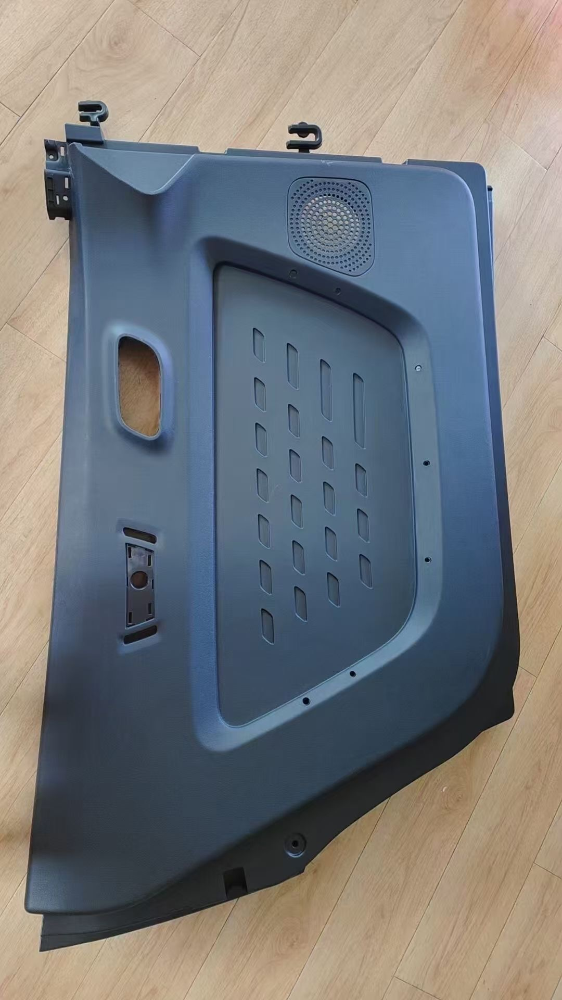

Why Gate Location Is the Most Important Decision in Automotive Injection Mold Design
Where plastic enters the mold cavity controls everything from warpage and weld lines to surface quality and cycle time. Here is what every mold engineer and procurement team needs to understand before tool build begins.
A few years ago, a Tier 1 supplier delivered a new mold for a dashboard air duct. The parts looked perfect straight out of the tool — clean, well-formed, and dimensionally correct at ejection. Twenty-four hours later, they had warped by 1.8mm at the mounting flange. Every part. Every cycle.
The steel was machined correctly. The cooling was balanced. The resin was right. The problem was a single gate placed 40mm too far from the thickest wall section. That one decision created a pressure gradient that locked residual stress into every part produced. The fix cost $14,000 in tool modifications and pushed the program back three weeks.
This kind of problem is more common than it should be — and it is almost always preventable. At Gege Mould, gate location is the first engineering decision we make, not the last. Here is why that matters, and how we approach it.

What the gate actually controls
Gate location is not simply about where plastic enters the mold. It determines how pressure is distributed across the entire cavity, where flow fronts meet and form weld lines, how molecules and fibers orient themselves, how the part cools, and whether residual stress becomes a dimensional problem after ejection.
Get it right and the rest of the tool design follows logically. Get it wrong and no amount of process adjustment — barrel temperature, injection speed, packing pressure — will fully correct it.
"Gate location is not a detail you optimize at the end. It is a design decision that constrains everything else — runner system, cooling layout, ejection pattern, parting line. It must come first."
Why automotive parts require a more rigorous approach
Automotive injection-molded components face demands that few other manufactured products face. A 15-year service life. Temperature cycling from −40°C to 120°C under hood. Vibration and mechanical load through every duty cycle. UV stability on exterior surfaces. And for interior visible components, Class A surface standards that tolerate no sink marks, flow lines, or weld marks — none.
The material range adds another layer of complexity. A single vehicle platform might include 20% talc-filled polypropylene door substrates, glass-filled PA66 retainers, ABS/PC mirror housings, and unfilled PP HVAC ducts — all with different flow behavior and shrinkage characteristics, all requiring careful gate placement decisions.
The five factors that drive our gate positioning decisions
1. Flow length and pressure balance
For standard automotive-grade PP at 2.5mm wall thickness, the practical flow length per gate is around 200–250mm before the melt front cools and stalls. Long, thin parts — door sill trims, roof rails, large instrument panel substrates — often need multiple gates or sequential valve gating to fill reliably.
In multi-cavity tools, pressure balance is just as important as raw flow length. All cavities must fill at the same rate and pressure. A gate offset by even 2mm from the ideal balance point will cause one cavity to over-pack while another short-fills — and process adjustment alone cannot solve it.
2. Weld line placement
When two flow fronts converge, they form a weld line. In glass-filled grades like PA66 33% GF, weld line strength can drop to 45–65% of the bulk material — and fibers orient parallel to the interface rather than across it, making the weld even weaker in bending.
The goal is to push weld lines away from stress concentration areas — mounting bosses, clip attachment points, hinge zones — and away from Class A surfaces. Moving a gate 15mm can redirect a weld line from a critical boss location to an inconsequential rib. That is the level of control good gate positioning gives you.
| Material | Weld line strength | Gate strategy |
|---|---|---|
| ABS | 80–90% of bulk | Moderate flexibility in placement |
| PP (unfilled) | 75–85% | Gate away from load-bearing zones |
| PP (20% glass filled) | 40–60% | Weld lines must avoid structural ribs |
| PA66 (unfilled) | 70–80% | Balance pressure carefully |
| PA66 (33% glass filled) | 45–65% | Never place weld on Class A or mounting points |
| PC/ABS blend | 70–85% | Good weld strength — optimize for cosmetics |
3. Warpage and residual stress
Warpage in automotive parts has three main causes: differential shrinkage through the wall thickness, anisotropic shrinkage in fiber-filled materials (flow direction vs. cross-flow), and frozen-in residual stress from uneven packing pressure.
When a gate sits at the edge of a large flat part, the near-gate area packs at high pressure while the far end packs at low pressure. That gradient becomes a stress gradient, which becomes out-of-plane bow after ejection. Positioning the gate closer to the geometric center of the part — even if it is less convenient for the runner layout — dramatically reduces this effect.
4. Surface quality and Class A requirements
The gate vestige must land somewhere it cannot be seen: a non-visible flange, behind a clip tower, or on the B-side of the part. But position is only half the issue. The flow arriving at a Class A surface must approach tangentially, not head-on.
Jetting is the most visible consequence of a poorly positioned gate. When plastic shoots through the gate opening before it contacts a wall, it folds back on itself as the cavity fills — leaving a snake-pattern defect that no process change can fully remove. The solution is positioning the gate so melt immediately impinges on a wall feature and establishes proper fountain flow from the first milliseconds of injection.
5. Ejection and production handling
Gate location also shapes where ejector pins can be placed, how runners route, and how robots grip and orient parts on automated lines. In high-volume automotive production, all of these are fixed at tool build. Gate position decisions made in isolation from the downstream production system create problems that nobody can fix cleanly.
Our process: four steps before a gate position is confirmed
Map wall thickness variation, rib and boss locations, surface class zones, and structural load paths.
Run full Moldflow analysis using resin-specific rheology data. Identify last-fill zones, pressure requirements, and fiber orientation.
Overlay predicted weld lines on the structural and aesthetic requirement map. Iterate gate position until weld lines land in benign zones.
Run shrink and warp analysis on the confirmed gate configuration. Verify all GD&T datum surfaces are within tolerance before tool build.
Gate types used in automotive tooling
The right gate geometry matters as much as the right position. Here is how the most common types map to automotive applications:
- Edge gate — Simple to machine and easy to adjust. Well suited to flat or moderately curved parts where the parting line is accessible. Not appropriate for Class A faces.
- Submarine (tunnel) gate — Self-degates at ejection, making it ideal for automated production where runners must separate without secondary trimming. Common for clip mounts, connector housings, and small functional components.
- Hot tip / valve gate — Standard for large panels in hot runner systems. The valve pin seals at switchover, eliminating vestige. Can be positioned on Class A surfaces with a cosmetic gate insert and precise thermal management.
- Fan gate — Used where melt must spread across a wide front with low shear stress. Common in thin-wall HVAC components, flat substrates, and battery housing covers. Requires a larger vestige clearance area.
Real-world result: HVAC duct mold, Tier 1 supplier
The original mold used a single edge gate at the narrow inlet end of a 340mm-long duct — a logical choice for the runner layout, but the wrong one for the part. Melt traveled over 300mm to reach the mounting flange, arriving at low pressure and high viscosity. The resulting differential packing created a steep stress gradient that manifested as 2.1mm of bow at the critical flange datum.
Mold flow simulation identified that moving the gate to the geometric midpoint of the duct — and converting from a cold runner to a hot tip gate — would reduce the maximum pressure differential from 42 MPa to 18 MPa across the part length. The tool was modified before production began. Results:

Why simulation is not optional
Modern mold flow software — Moldflow, Cadmould, Sigmasoft — can predict fill patterns, weld line locations, pressure distributions, fiber orientation, and warpage with enough accuracy to make physical trial-and-error for gate selection economically indefensible. A simulation study evaluating three gate positions across two materials costs a fraction of a single tool modification.
The critical discipline is using accurate material data. Simulation run on generic shrinkage values will correctly rank gate options — but predicted warp numbers may be 30–40% optimistic compared to production reality. Suppliers who maintain internal databases with resin-specific pvT curves, viscosity data, and fiber orientation factors report simulation accuracy within 0.1–0.2mm of actual measured part warpage.
At Gege Mould, simulation with validated material data is a standard part of every tool design review — not an optional add-on for complex projects.
The most common mistakes — and how to avoid them
Three patterns repeat themselves across programs that struggle with gate-related quality issues:
- Treating gate position as a runner design detail. Gates chosen to minimize runner length or simplify the tool layout frequently compromise part performance. Gate position must be established from the part outward — not from the runner inward.
- Using generic material data for simulation. Every filled and reinforced grade has unique anisotropic shrinkage behavior. Generic inputs produce optimistic warp predictions that do not survive contact with production reality.
- Making gate decisions without cross-functional input. The mold designer optimizes for machinability. The process engineer optimizes for cycle time. The part designer optimizes for function. Gate location sits at the intersection of all three — and the best position requires all three perspectives at the same time.
At Gege Mould, gate location is established in the first design review — before runner systems, cooling layouts, or ejector patterns are finalized. It is the decision that every other decision depends on, and it deserves the analysis time to match. If you are planning an automotive injection mold program and want to talk through gate strategy before tool build, our engineering team is available to review your part geometry and provide a flow analysis recommendation.
Ready to Discuss Your Mold Program?
Send us your part drawing or CAD file. Our engineering team will review it and respond with an initial assessment within 48 hours.
Get a Free Quote